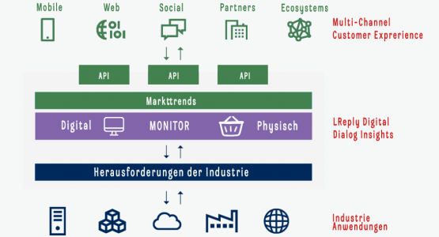

Platform
According to numerous studies, there is a general consensus on the existence of a positive relationship between differentiation and organizational performance. positive relationship between differentiation and organizational performance.
for Product Testing
DataSync Inc. provides you with a platform to know everything you need to know about your customers. The fast moving consumer goods (FMCG) industry is undergoing a significant transformation in response to the demand for more convenience, the COVID-19 pandemic, and changes in customer behavior. Key trends in the FMCG industry that are responding to these changes include Sustainable product and packaging development, solutions that improve the customer experience, and digitization. To deliver a better customer experience and gain a competitive advantage, consumer products companies are pursuing omnichannel sales and e-commerce, in addition to deploying big data, analytics and artificial intelligence (AI) solutions. In addition, Internet of Things (IoT) devices and 3D printing technology are enabling consumer products companies to improve direct distribution to meet rising customer expectations. To meet these challenges, consumer involvement in product development is essential, with online and physical testing becoming increasingly important in product research.
In this context, our platform offers incredible advantages (including direct digital contact with potential consumers, direct involvement in the product development process, direct and transparent dialogue and trust building, active customer participation in the process). We put all our energy and expertise into connecting consumer goods manufacturers and consumers through a single, transparent, independent and non-confrontational platform. We invent a new and better future for your business.
Our platform is considered not only as a technology platform, but also as a service, or what Silicon Valley calls a “product”. The platform is grouped into three (Multi-Channel-Plattformen für die Customer Journey, DataSync Inc. Monitor, Industry applications), main areas.
The many companies in the FMCG sector are among the most innovative companies of the last generation. A handful of industry leaders are quickly joining their ranks by reinventing their core business around data and digital by engaging the consumer throughout the product creation process, from launch to market.
What distinguishes these companies from the rest is that their technology allows them to act faster, more flexibly and on a larger scale than their competitors. All these functionalities are present in the DataSync Inc. platform.
Our platform consists of a logical set of activities and associated technologies that address specific business objectives: Increasing your company’s profitability and improving your products, which can be digital or physical. Our platform is managed individually or as a group, modules can be exchanged, and when assembled, they form the backbone of our technology capability. It is also important that the business and technical teams in the company work closely together and have the decision-making power to act quickly.
The modular computing configuration of our platform enables FMCG companies to become faster and more innovative, regardless of their size. They are able to experiment, fail, learn and evolve quickly: they can bring their products to market faster than their larger competitors (in weeks instead of months). With this kind of speed and flexibility, product testing (physical and online) can and should become an axis for innovation and growth.
The many forceful enterprise in FMCG companies are among the most innovative companies of the last generation. A handful of industry leaders are quickly joining their ranks by reinventing their core business around data and digital by involving the constomator during of the product creation process, from its launch to the market.
What distinguishes these companies from the rest is that their technology allows them to act faster, more flexibly and on a larger scale than their competitors. All these functionalities are present in the DataSync Inc. platform.
Our platform consists of a logical set of activities and associated technologies that address a specific business objective to increase the profitability of your proOur platform consists of a logical set of activities and associated technologies that address a specific business objective – to increase your company’s profitability and improve your products, which can be digital or physical. Our platform is managed individually or as a group, modules can be exchanged, and when assembled, they form the backbone of our technology capability. It is also important that the business and technical teams in the company work closely together and have the decision-making power to act quickly.
The modular computing configuration of our platform enables FMCG companies to accelerate and innovate regardless of their size. They are able to experiment, fail, learn, and evolve quickly: they can bring their products to market faster than their larger counterparts (in weeks instead of months). With this kind of speed and flexibility, product testing (physical and online) can and should become an axis of innovation and growth.
DataSync Inc.’s platform focuses on business solutions (Sustainability Customer Experience, digitization, e-commerce of consumer products, big data and analytics, artificial intelligence analytics, artificial intelligence, direct distribution, internet of things, blockchain in short, product quality improvement) to serve customers (internal or external). The modules operate internally as independent entities that bring together the activities of customizers through technology, governance, and processes. They are led by DataSync Inc. GmbH, which assumes end-to-end responsibility for the provision of data and its operation as a service.

Our platform is composed of many distinct units/modules (among others, research tools, CX tools, survey tools, panel offerings, reporting tools, etc.), but their value lies in the effectiveness of their collaboration between DataSync Inc. and the client.
Many companies in the past have overlooked the importance of making everything work together, as well as the transparency of data reporting during campaigns. Today, with DataSync Inc., we can transparently track the entire physical process of data exploitation through our platform.